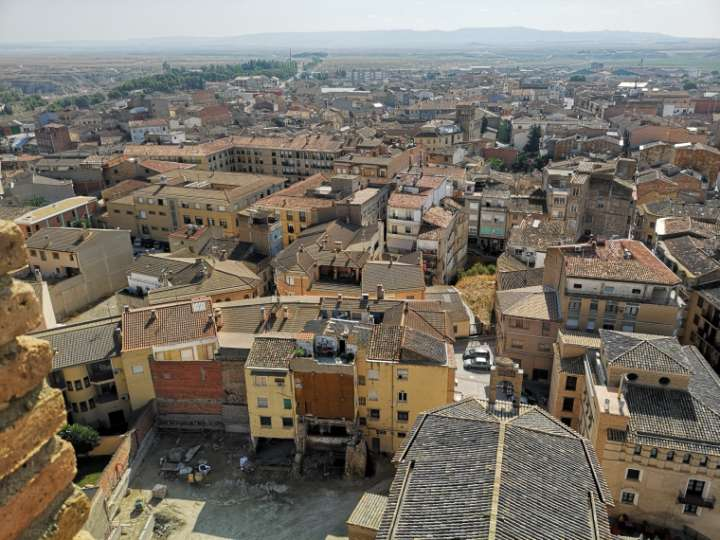
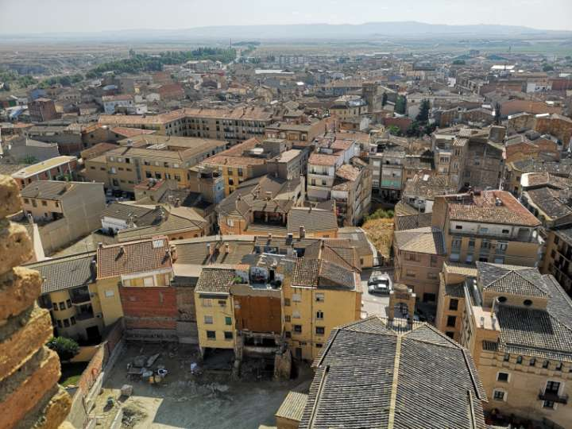
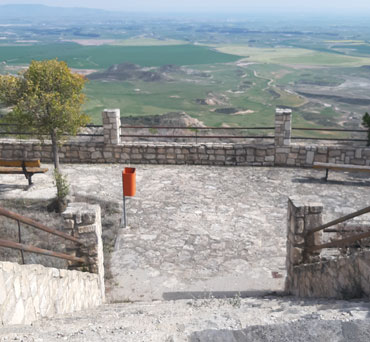
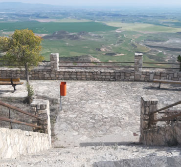
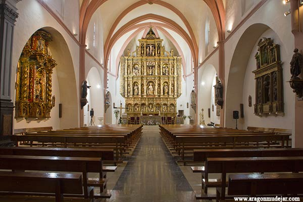
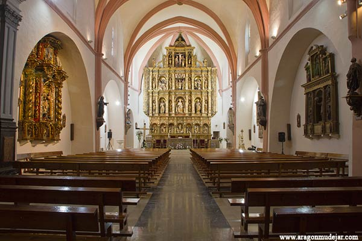
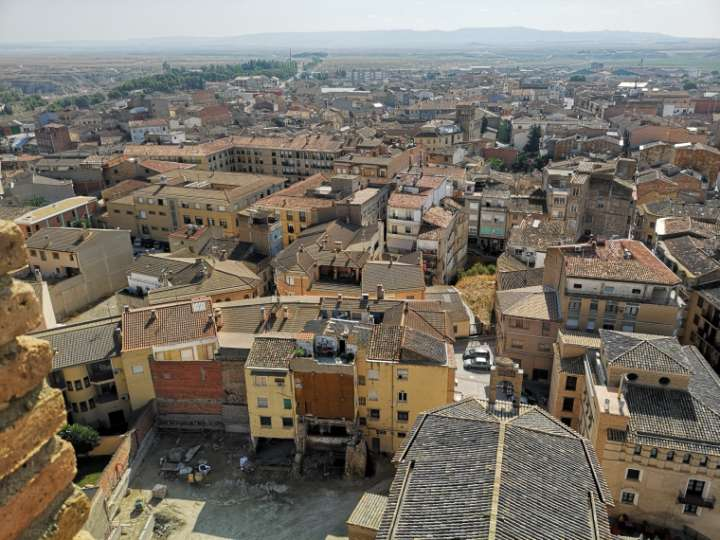
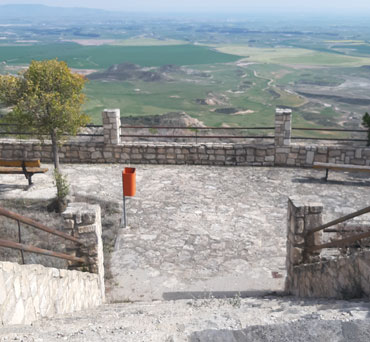
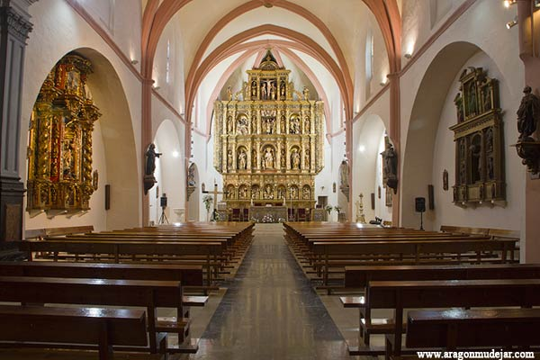

Photographic Gallery of Tauste
A selection of images that show the essence and beauty of the municipality.
 

 


 


Zaragoza · Aragón
A selection of images that show the essence and beauty of the municipality.


